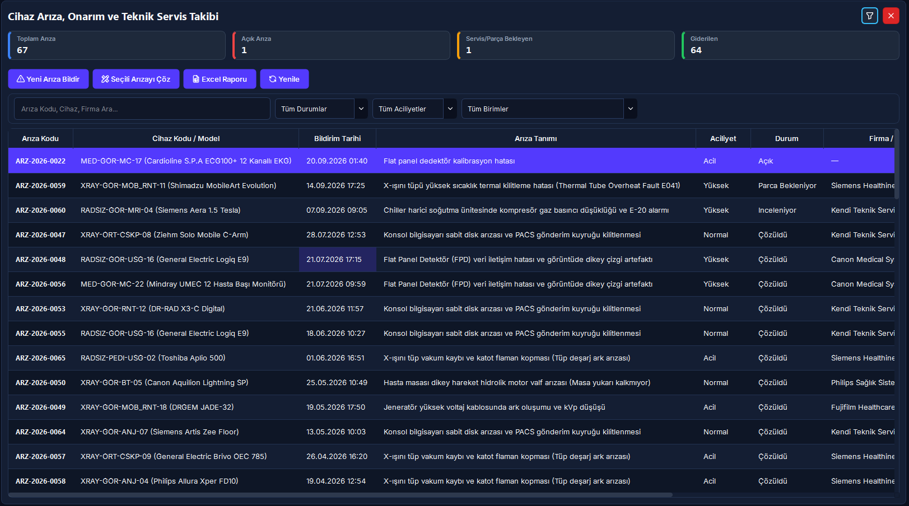
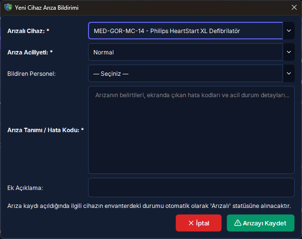
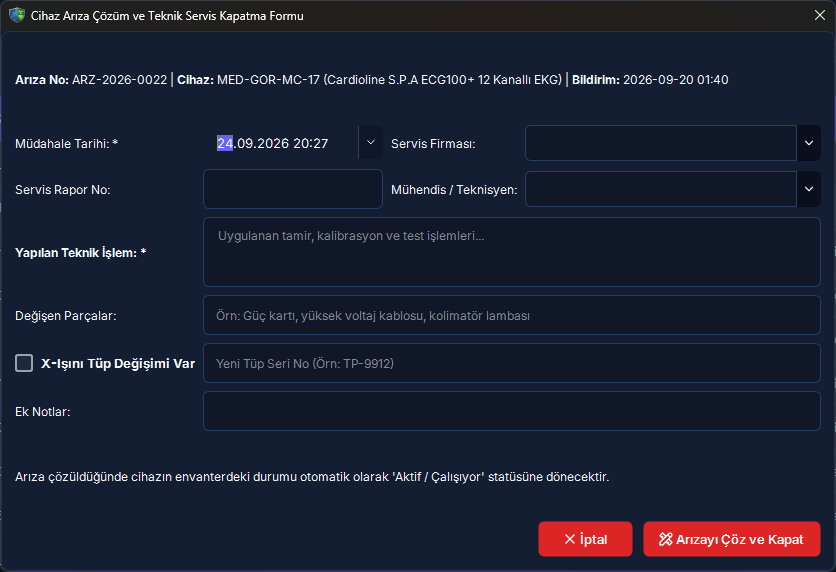
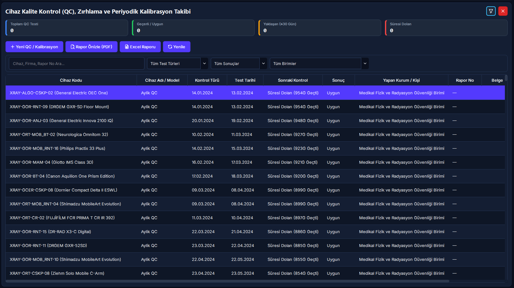
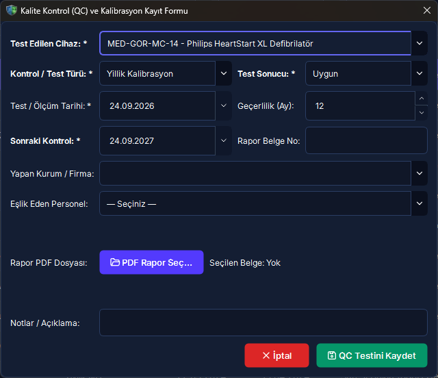

Cihaz Arıza, Periyodik Bakım ve Kalite Kontrol (KKT / KUT)
Radyoloji ve tıbbi cihazların teknik arıza bildirimleri ile ara servis/test süreçlerini, X-ışını tüp değişimi künye senkronizasyonunu, ihale şartnamelerine bağlı Bu Yıl odaklı Periyodik Bakım Radarını ve TİTCK TCS-KLVZ-06 kılavuzuna uyumlu resmi rapor bazlı Kalite Uygunluk (KUT) / Periyodik Kalite Kontrol (KKT) süreçlerini tek merkezden yönetmenizi sağlar.
Kısa Reçete: Arıza Kapatma, İhale Bakım ve Resmi KUT/KKT Planlama
Cihazın sözleşme veya yasal periyot bitimine kadar olan tüm bakım ve kalite kontrol dönemlerinin takvime işlenmesi, işlem gerçekleştiğinde şifreli PDF formuyla kapatılması.
İlgili modülden [İhale Bakım Takvimi Planla] veya [İhale Kalibrasyon / KUT Takvimi Planla] butonuna tıklayıp cihazları, tarihi ve periyodu seçin; dönem geldiğinde satırı seçip [Bakımı Tamamla] ya da [Planlı Testi Tamamla] üzerinden imzalı PDF raporu ekleyin.
Sözleşme bitimine kadar tüm slotlar Beklemede statüsüyle radara işlenir; kapatılan belgeler AES-256 Evrak Kasasında saklanır ve olumsuz QC kararında cihaz güvenlik kilidine alınır.
5N1K Kural ve Arayüz Çözümleme Tablosu
Arıza çözüm ara statüleri, tüp değişimi senkronizasyonu, ihale bakım radarı, TİTCK resmi KUT/KKT rapor modeli ve güvenlik kilidi kuralları.
Kritik Sahada Yanlış Bilinen Kurallar (Mit Avcısı)
Süreç Akış Şeması
- Arıza ve Onarım Döngüsü: Arıza açılınca cihaz kullanım dışı sayılır; parça bekleme veya onarım sonrası test aşamalarında kilit korunur ve yalnızca tüm açık arızalar kapatıldığında (varsa yeni X-ışını tüpü işlenerek) cihaz Aktif duruma döner.
- İhale Bakım Radarı: Sözleşme bitimine kadar üretilen tüm bakım tarihleri Bu Yıl varsayılan görünümünde izlenir ve imzalı PDF servis formu şifreli kasaya alınarak kapatılır.
- Resmi KUT/KKT ve Emniyet Kilidi: KUT/KKT takvimi veya münferit resmi rapor sonucu Kullanımı Uygun ise geçerlilik başlatılır, Sınırlı Kullanım ise azami 1 yıllık termin açılır, Kullanımı Uygun Değil ise cihaz güvenlik kilidiyle Arızalı statüsüne çekilir.
Arayüz Ekran Görünümleri







Adım Adım İşlem Rehberi
1. Cihaz Arızası Bildirme ve Müdahale Sürecini Yönetme
- Cihaz Arıza ve Onarım Takibi ekranında [Yeni Arıza Bildir] butonuna tıklayın; arızalı cihazı, aciliyet seviyesini (Düşük, Normal, Yüksek, Acil), bildiren personeli ve hata kodunu/tanımını girip [Arızayı Kaydet] butonuna basın (cihaz envanterde otomatik Arızalı olur).
- Servis müdahalesi başladığında satırı seçip [Seçili Arızayı Çöz] butonuna tıklayın. Üst alandaki salt okunur Önceki Müdahale Geçmişi kutusunda önceki teknisyen kayıtlarını silme riski olmadan inceleyip alttaki alana yalnızca yeni gelişme notunuzu yazın; ardından durumu esnek biçimde Açık, Servis Bekleniyor, Parça Bekleniyor, Test Aşamasında veya Çözüldü seçerek [Süreç Durumunu Kaydet] butonuna basın (her kayıt tarih, saat ve kullanıcı adı damgasıyla geçmişe eklenir).
- Tüm onarım tamamlanıp Çözüldü aşamasına geçerken servis firmasını, çözen kişiyi ve son teknik notu girin; tüp yenilendiyse X-Işını Tüp Değişimi Var kutusunu işaretleyip yeni seri numarasını ekleyin. [Belge / Form Seç] ile servis formunu bağlayıp [Teknik Rapor] üzerinden A4 tutanağını kontrol edin ve [Arızayı Çöz ve Kapat] butonuna basın.
2. İhale Şartnamesine Göre Periyodik Bakım Planlama ve Kapatma
- Cihaz Periyodik Bakım ve Sözleşme Takibi ekranında üst kartlardan (Bu Ay Planlanan, Gelecek Ay, Geciken, Tamamlanan) durumu izleyin ve [İhale Bakım Takvimi Planla] butonuna tıklayın.
- Açılan pencerede marka/modalite veya arama süzgeciyle bir ya da birden fazla cihazı işaretleyin (gerekirse [Tümünü Seç] / [Seçimi Temizle] kullanın); ilk bakım tarihi, sözleşme bitişi ve bakım periyodunu (1, 3, 6 veya 12 ay) girip [Bakım Takvimini Oluştur] butonuna basın.
- Bakım yapıldığında ilgili satıra çift tıklayın veya [Bakımı Tamamla] butonuna basın; refakat eden personel, teknisyen ve yapılan işlemleri girip [PDF Form Seç...] ile ıslak imzalı formu ekleyin ve [Bakımı Tamamla ve Kaydet] butonuna tıklayın (kayıtlı belgeleri [Servis Formu (PDF)] veya [Görüntüle] ile açabilirsiniz).
3. TİTCK Resmi Kalite Kontrol (KUT / KKT) Takibi ve Karantina Kilidi
- Cihaz Kalite Kontrol (KKT), Kalite Uygunluk (KUT) ve Kalibrasyon Takibi ekranında çoklu cihaz planlaması için [İhale Kalibrasyon / KUT Takvimi Planla] butonuna tıklayın; modalite seçimine göre sistemin önerdiği yasal periyodu (KUT için Radyoterapi 36 ay, Diagnostik/Nükleer Tıp 60 ay; KKT için 3/6/12 ay) ve sözleşme bitiş tarihini onaylayıp [Kalibrasyon / QC Takvimini Oluştur] butonuna basın.
- Planlanan tarihte testi tamamlamak için satırı seçip [Planlı Testi Tamamla], ihale dışı kurulum/tüp değişimi sonrası tekil rapor için [Münferit Resmi Rapor Gir] butonuna tıklayın.
- Kontrol türünü (Kalite Uygunluk Testi — KUT, Periyodik Kalite Kontrol — KKT veya Kabul / Onarım Sonrası Doğrulama Testi), rapor no, yapan kuruluş ve KUK yetki belge numarasını yazıp [PDF / Rapor Seç...] ile imzalı raporu ekleyin.
- Sonucu (Kullanımı Uygun, Sınırlı Kullanım veya Kullanımı Uygun Değil) seçip kaydedin; Uygun Değil sonucunda açılan güvenlik uyarısını onayladığınızda cihaz otomatik Arızalı statüsüne kilitlenir (tüm kayıtları [İmzalı Rapor (PDF)] ve [Dışa Aktar] üzerinden inceleyip Excel/PDF/Word aktarabilirsiniz).
4. Web Portalı ve Mobil QR ile Saha Teknisyen Akışı
- Saha teknikeri veya sorumlusu Web Portalındaki Cihaz Eşleştirme ve Seçim Merkezi çubuğundan birim, modalite, durum veya arama süzgecini kullanarak cihazı seçebilir ya da [QR Tara] düğmesiyle cihazın etiketini kameradan okutup satır içi Cihaz Pasaport Kartını anında açabilir.
- Pasaport kartının altındaki dört operasyonel sekmeden (Arıza Bildir / Müdahale, Bakım İşlemleri, Kalite Kontrol ve Tarihçe) açık arızalara esnek statü ve zaman damgalı silinemez müdahale notu eklenebilir, planlı/münferit bakım ve KKT/KUT testleri imzalı PDF formuyla sahadan kapatılabilir veya mevcut şifreli belgeler görüntülenebilir.
Sıkça Sorulan Sorular (SSS)
Periyodik bakım ekranı açıldığında neden varsayılan olarak Bu Yıl filtresi gelir?
Önceki veya gelecek yıllara ait yüzlerce ihale slotu arasında günlük takibin kaybolmasını önlemek için ekran doğrudan içinde bulunulan yılın bakım takvimini ve aylık radar sayaçlarını öne çıkarır. Geçmiş yıl kayıtlarını incelemek istediğinizde üst filtre çubuğundan zaman seçimini değiştirmeniz yeterlidir.
Arıza çözüm penceresinde Test Aşamasında seçilirse cihaz neden hemen Aktif olmaz?
Büyük parça veya X-ışını tüp değişimi sonrasında teknik servis onarımı bitirse bile medikal fizikçinin kabul/doğrulama ve doz kontrol testleri henüz tamamlanmamış olabilir. Test Aşamasında ara statüsü cihazın onarımın ilk aşamasını geçtiğini gösterirken testler bitene kadar klinik hasta çekimini güvenle bekletir.
Sınırlı Kullanım sonucu girildiğinde 1 yıllık termin ne anlama gelir?
TİTCK düzenlemeleri gereğince cihazda çalışmayı tamamen durdurmayan ancak düzeltilmesi gereken kusurlar varsa Sınırlı Kullanım kararı verilir. Sistem test tarihinden itibaren azami 1 yıllık düzeltme ve tekrar kontrol termini hesaplar ve rapor tablosunda ayrıca vurgular.
Bakım veya arıza işlemlerinde maliyet tutarı girilmesi zorunlu mudur?
Hayır. RADPYS V4 arıza ve bakım modülleri finansal fatura muhasebesi yerine teknik servis sürelerini, cihaz duruş güvenliğini, parça/tüp değişim tarihçesini ve ıslak imzalı resmi servis/QC formlarının şifreli izlenebilirliğini yönetmek üzere kurgulanmıştır.